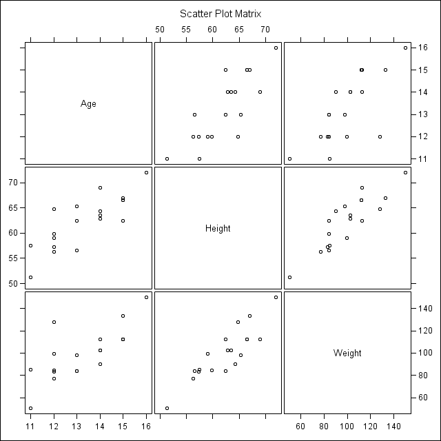

Writing SAS Documentation index SAS workshop notes
This is an introduction to using R Markdown to produce documents based on SAS.
Using SAS with R Markdown gives you a method of writing simple documents that include the results of executing SAS commands, with both the document text and the source SAS code in one file.
This is especially good for writing simple documents that explain statistical coding tasks. One way to think of this is as an extended and more readable version of writing comments in your source code.
This process uses Rstudio (or just R) to create documents that depend upon SAS code. The source for this document is SASmarkdown.rmd
Markdown is a language for formatting fairly simple documents using just a few text symbols. It is designed to be easy to read and write. You may already be using Markdown (in email, for instance) and not even realize it - it's that simple! If you are not already familiar with Markdown see John Gruber's Markdown article.
R Markdown extends Markdown by allowing you to include blocks of code in one of several programming languages. The code is evaluated, and both the code and it's results are included in a Markdown document. To read more about the details of R Markdown see RStudio's R Markdown webpages
RStudio uses an R package called knitr (this could also be called directly from R code), which includes the ability to evaluate SAS code. We will refine this in subsequent articles.
The documentation for knitr can be found in R's Help, from this web page, or in Yihui Xie's book, Dynamic Documents with R and Knitr.
RStudio makes it easy to process your R Markdown document, execute the source code, and produce a final HTML, pdf, or Word document. After you have written your R Markdown document, RStudio processes it with a simple click of a button! The focus in these articles will be on producing HTML (web) pages.
Using SAS with R Markdown is not quite as graceful as using R with R Markdown, but we have automated some techniques for putting together simple documents.
Note that this is not a friendly environment for extensively debugging problems in your SAS code. If your code is at all complicated, you should work out the details in SAS first, then bring it into RStudio to develop your documentation!
SAS code is included in your R Markdown document in a block called a "code chunk". When you click on Rstudio's Knit button, your initial document, what you actually wrote out, is processed by the R function knitr, evaluating your code, collecting the output, and producing a Markdown document. This Markdown document is then processed by a program called Pandoc to produce your final HTML document.
It helps to understand how knitr evaluates your SAS code. Knitr writes out your code into a file, and then submits that file to SAS to be run in batch mode. This produces SAS log and SAS "listing" output. The listing output is then read back into knitr and used to produce a block of output in the Markdown document. (These files are all temporary.)
There are two basic limitations that you will have to work with:
Each code chunk runs separately as a SAS batch job, they are not processed as a single running session like R code. Interspersing text with executed code is not as simple as when running R code.
For example, suppose you have a DATA step early in your document, and then want to use that data in a later code chunk. In the later code chunk, SAS will have begun a new session (a new batch job) and "forgotten" the first DATA step. SAS will not find the data, so SAS will send an error message to R Markdown. The message R Markdown passes back to you will only tell you that SAS did not exit properly.
(Unlike calling R from SAS's PROC IML (see the Calling R from SAS KB), when calling SAS from R you cannot just hand off your data).
Some of this difficulty can be overcome with the strategic use of a SAS autoexec file (which we automate in another article) or by echoing only part of the code through the echo code chunk option.
Although text output is simple to use, other types of output require more thought. If you want to use SAS's html output instead of the listing output, or if you want to include SAS graphics in your final document, a different version of knitr's SAS engine makes this fairly simple (again, a topic for another article).
Longtime SAS users will find that SAS listing output looks as expected in both html and pdf documents. (Newer SAS users may not be familiar with listing output, since it is no longer the default when using SAS interactively. R Markdown runs SAS in batch mode, so listing output is produced by default.)
SAS html output can be included in a final html document, but renders poorly as a pdf document when run through R Markdown. To do much more than simply display listing output in pdf documents, you will want to investigate SAS's StatRep or Lenth's SASWeave.
Both R and SAS need to be able to read and write files in a shared location. This is simplest when your R Markdown file is located in the directory where you want your final document to be written, and all other files used by both R and SAS (like graphics files) are also in that directory.
Files used solely by R (I have some setup and style files I use) could be located anywhere, they only have to be specified in your R code. Likewise, files used solely by SAS (pehaps data or formats) could be located anywhere, and they are addressed the usual way in your SAS code.
Also keep in mind that for the Windows OS, SAS will use backslashes in file paths, while R will use forward slashes. Note in the code chunk options below we are specifying paths to R, so use forward slashes.)
Other file arrangements are possible - perhaps all your graphics in a "graphics" folder - just keep in mind that you'll need to specify alternate locations to both R and SAS.
The code chunk setup to run SAS is not too difficult. But as long as SAS is not in your operating system's PATH variable, you need to specify its full path with the engine.path option (all on one line), e.g.
```{r, engine="sas", engine.path="C:/Program Files/SASHome/SASFoundation/9.4/sas.exe"}
-- SAS code here --
```(This is a little awkward to show you, because the code chunk setup, the part in curly braces, must all be on one line.) You will also want to add an engine.opts option, so that SAS will produce output with reasonable line lengths.
```{r, engine='sas', engine.path="C:/Program Files/SASHome/SASFoundation/9.4/sas.exe", engine.opts="-nosplash -linesize 75", comment=""}
-- SAS code here --
```If you have several code chunks you can automate this with a preliminary code chunk in R as
```{r}
saspath <- "C:/Program Files/SASHome/SASFoundation/9.4/sas.exe"
sasopts <- "-nosplash -ls 75"
```
```{r, engine='sas', engine.path=saspath, engine.opts=sasopts, comment=""}
-- SAS code here --
```Finally, if all of your executable code is sent to SAS you can just set the chunk options as defaults:
```{r, message=FALSE}
require(knitr)
saspath <- "C:/Program Files/SASHome/SASFoundation/9.4/sas.exe"
sasopts <- "-nosplash -ls 75"
opts_chunk$set(engine="sas", engine.path=saspath,
engine.opts=sasopts, comment="")
```
```{r}
-- SAS code here --
```Here then, is an example as it might appear in your final document.
proc means data=sashelp.class;
run;
proc freq data=sashelp.class;
tables sex;
run; The MEANS Procedure
Variable N Mean Std Dev Minimum Maximum
-------------------------------------------------------------------------
Age 19 13.3157895 1.4926722 11.0000000 16.0000000
Height 19 62.3368421 5.1270752 51.3000000 72.0000000
Weight 19 100.0263158 22.7739335 50.5000000 150.0000000
-------------------------------------------------------------------------
The FREQ Procedure
Cumulative Cumulative
Sex Frequency Percent Frequency Percent
--------------------------------------------------------
F 9 47.37 9 47.37
M 10 52.63 19 100.00 There are two advantages to using SAS's html output, rather than the listing output. First, results tables become html tables instead of strategically spaced text, and will dynamically size themselves to the end user's window. Second, you can include SAS graphics in your final document with a minimum of fuss.
To use SAS's html output, use sashtml engine, as described in a later article.
```{r, engine='sashtml', engine.path=saspath, engine.opts=sasopts, results='asis'}
-- SAS code here --
```As an example,
proc corr data=sashelp.class plots=matrix;
run;
| 3 Variables: | Age Height Weight |
|---|
| Simple Statistics | ||||||
|---|---|---|---|---|---|---|
| Variable | N | Mean | Std Dev | Sum | Minimum | Maximum |
| Age | 19 | 13.31579 | 1.49267 | 253.00000 | 11.00000 | 16.00000 |
| Height | 19 | 62.33684 | 5.12708 | 1184 | 51.30000 | 72.00000 |
| Weight | 19 | 100.02632 | 22.77393 | 1901 | 50.50000 | 150.00000 |
|
Pearson Correlation Coefficients, N = 19 Prob > |r| under H0: Rho=0 |
|||||||||
|---|---|---|---|---|---|---|---|---|---|
| Age | Height | Weight | |||||||
| Age |
|
|
|
||||||
| Height |
|
|
|
||||||
| Weight |
|
|
|
||||||
